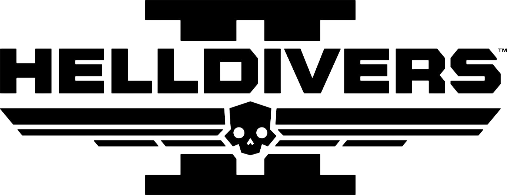

Helldivers II
Helldivers 2 es un videojuego de disparos cooperativo en tercera persona desarrollado por Arrowhead Game Studios y publicado por Sony Interactive Entertainment en febrero de 2024. Fue lanzado para PlayStation 5 y Windows el 8 de febrero de 2024.
El título recibió comentarios positivos de los críticos y vendió más de 1 millón de unidades en el primer mes de su lanzamiento.